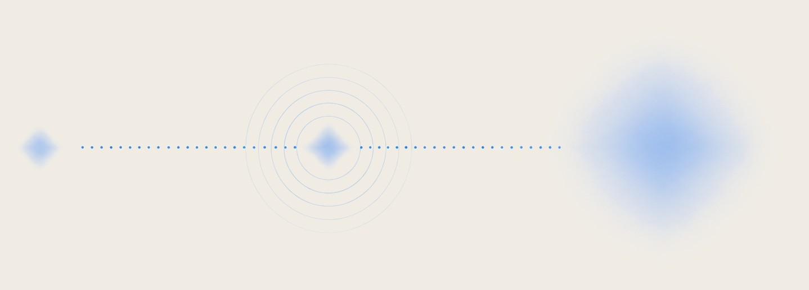
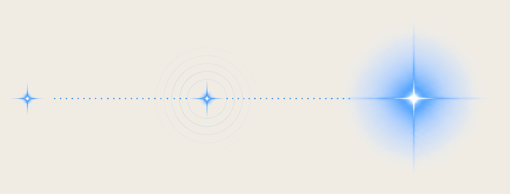
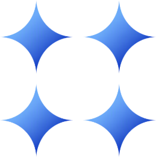

Track Record
7+ Years Of Experience in Brand & Marketing Management
FMCG Fundamentals · 6 YoE


Emerging Tech Leap · 1.5 YoE
.svg)
Good product, soft traction. Usually it's how the product branding & communication is packaged, not the channel.
From Unilever Vietnam, Homecare to Ninety Eight: Coin98, Conviction, Viction — 7+ years of experience
Distribution alone doesn't create value.
It multiplies whatever legibility you already had.


If positioning is vague, spending more to spread gets wasted.
How I work
I learned this back when I was working as Brand Manager in an FMCG Conglomerate in Vietnam. In FMCG you don't get to find out after launch. The whole package is tested before it ships, against a number the whole team agreed in advance.
Concept testing, action standards, gate reviews.
I adapted that standard practice into a more agile approach in tech.
Who is actually buying or attracted, named and evidenced
Up to three routes of concept. Tested against the target segment, scored against a number set beforehand

Gate 3 AssetsOne set of visual identity & messaging packaged across brand and product
The package only works where the buyer actually looks: Website, search, app store, socials
Stage One — Prove the package
Before anything gets amplified, the message has to hold up against real people.
Stage Two — Make it travel
A proven message still dies if the assets are inconsistent and nobody can find them.
Track Record
FMCG Fundamentals · 6 YoE
Emerging Tech Leap · 1.5 YoE
Services & engagement
Fractional. Bounded. Episodic.
A full-time brand hire would be too much if flexibility is what you need. What I bring to the table is brand management discipline, taste and dedication in making your product deliberately packaged, ready to be shipped to market.
Brand diagnosis and initial strategy proposal.
Starts at $1,000All four gates in 50–75 days of brand audit, strategy & execution planning & 60-day pilot.
From $11,000| Engagement | Full Sequence | |
|---|---|---|
| Audience | Diagnosis | Full validation |
| Concept | Recommendation and reference only | Full concept test against a pre-set action standard |
| Assets | Not included | Delivered |
| Launch | Not included | Delivered, with execution support |
| Format | Written diagnosis & recommendation | Full four-gate execution and system |
| Duration | 5–7 days | 50–75 days, incl. 60-day execution pilot |
| Price | Starts at $1,000 | From $11,000 |